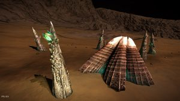
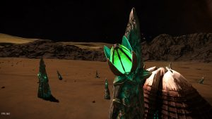
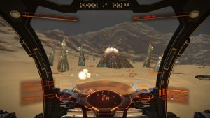
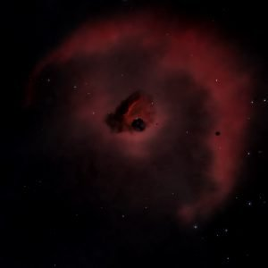
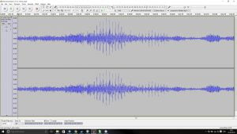
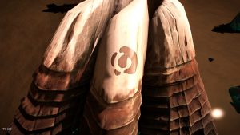
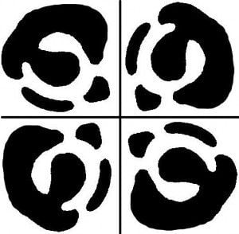

Large Barnacles are alien life forms that have been found on certain air-less planets of ambient temperature close to nebulae in the Pleiades, Witch Head and Coalsack nebulae. A barnacle site consists of a central formation that resembles a terrestrial marine barnacle, from which it derives its name. The central barnacle is surrounded by several spikes which give either a meta alloy when shot or an elemental resource from the material drop table for the planet which the barnacle resides. Typically a barnacle in its ripe state will give 2 meta alloys. The meta alloy spikes can be easily recognised by the large green “fruit” which is at the top of the spikes. Barnacle fruits and the barnacle itself emit a yellow/green glow and green/purple particle clouds similar to those observed from the Unknown Artifacts.


Meta-Alloys are the fruit of Large Barnacles and can be harvested by shooting the spike that it is attached to.
In-game description:
Meta-alloys have a complex lattice structure with large internal voids. They are cellular in nature, and formed organically. They are incredibly strong – much stronger than foamed aluminum for example. Many elements form the structure so technically they are alloys, but the composition is different in different parts of the cell walls for strength. They are good thermal insulators, and have a high melting point, but if they are melted they lose all their special properties and become a conventional alloy. They are easily machined, but as yet cannot be manufactured, only found in space. They are associated with recently discovered alien entities nicknamed ‘Large Barnacles’ by interstellar explorers. These appear to be common in certain parts of space, although no-one is certain why. This material has been heralded as the next step in materials technology. It is ultra-light and stronger and more versatile than most commercially available alloys.
Large Barnacles were found on low-g planets with a metal content of >9% close to the Pleiades, the Witch Head, and the California nebulae. On planets, they are found in or close to canyons of high metal content, in valleys, or in craters. Barnacles are persistent and do not appear as a POI on the scanner and have to be spotted by eye.
Starting with the 2.1 Engineers patch of Elite Dangerous, Large Barnacles can spawn already farmed without or with fewer intact fruit-bearing spikes. Other Large Barnacles are now guarded by defence turrets installed by an unknown organisation, or in case of a barnacle on Merope 2A by a Farragut Battlecruiser. Canonneers have catalogued those changes and discovered that the state of a barnacle changes over time.
For barnacle locations and general info, there is an excellent spreadsheet maintained under the lead of Cmdr NetSlayer and a spreadsheet maintained by Cmdrs Chopper, Vaeleden, Red Wizzard and Zenith.
An excellent article describing the features of the Large Barnacle was written by Locastan. Not much is known about the nature and purpose of the Large Barnacles. David Braben confirmed that they constitute a genetically modified earlier life form. For up-to-date research, visit the UA threadnought.
The discovery of the Large Barnacles lead to a number of scientific questions that are currently under investigation by Canonn members.
No conclusive answer has been found, yet. We know that they are genetically engineered life forms and that they are protected by human-made equipment (see above). There are numerous theories on the threadnought. Since 2.3 flowerships have been sighted interacting with the barnacles with a form of energy beam. This is currently under investigation.

Unknown Artefacts point to Merope, a system in the Pleiades that contains Large Barnacles.Canonn researchers are looking frantically for a clear connection between the two entities (UA are Barnacles after some time? – started by Cmdr Ratking). Cmdr Engalo made the initially exciting observation that fireflies from a UA and a Large Barnacle might fly jointly when the UA is placed close to the Large Barnacle. It was shown later that, unfortunately, no interaction between the two types of fireflies takes place. As of June 3303, flowerships have been sighted interacting with the barnacles. This has given us a direct link between the UA and Barnacles

Although barnacles have been found in and near three nebulae by now, it is unknown why barnacles were found in those locations. Additionally, within a nebula conditions for barnacle bearing planets are under research. Canonn members are currently searching the galaxy for barnacles.Commander M. Volgrand maintains a spreadsheet with landable bodies in nebulae that were searched for barnacles. Scientists are encouraged to submit new data using this form. A spreadsheet containing information on barnacle locations is maintained by Cmdr NetSlayer (submission form).

The Large Barnacles make a distinguished sound that while it shares certain features with the UA sound, it is also much more complex. Canonn scientists are looking for hidden messages in the sound.Commander M. Volgrand maintains a spreadsheet containing a list of barnacle audio files. Scientists are encouraged to submit new data using this form.


Possibly related to their origin, each barnacle stars three identical and apparently artificial symbols. Hypotheses include that the symbol depicts Barnards Loop, the Great Magellanic Cloud, or the Pleiades at a particular viewing angle. This research is mainly conducted on the threadnought.Close to barnacles crashed ship sites were found and it is speculated that barnacle growth and downed ships are related. The most famous site is the downed Anaconda next to several barnacles on Pleiades Sector JC-U b3-2 1 at (Lat 20.8736, Long 91.6983). Canisters spilled on the wreckage site bear a well known company name ‘CAINE-MASSEY’.
CAINE-MASSEY is a extremely competitive mining corporation and is also one of the largest mega corporations in the known galaxy. CAINE-MASSEY mine planets and star systems for resources.
Their advertisements can be seen at most stations, on the sides of the airlock on the way into stations, and also on the exterior and interior of the hangars. Their slogan is “The local mining company”
Independent from our group, Prof. Ishmael Palin runs its own program in UA and Large Barnacle research. He had established his own research base on Maia B1 BA for his studies of the meta-alloy material before his kidnapping and then establishing a base on Maia A 3A. His base was then attacked by Thargoids and he was rescued and subsequently moved to Arque. So far Palin has not shared much of his research results with the galactic community and his motives remain unclear.